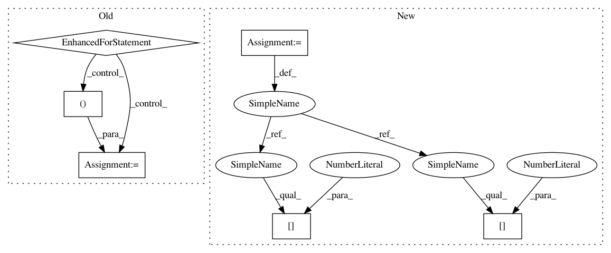

e31fb50e9d0af2e42118474f8042751a6c5692f3,examples/sandwich.py,,plot_neighborhood_graph,#,86
Before Change
def plot_neighborhood_graph(x, nn, y, axis=pyplot, cols="rbgmky"):
for i in xrange(x.shape[0]):
xs = [x[i,0], x[nn[i,1], 0]]
ys = [x[i,1], x[nn[i,1], 1]]
axis.plot(xs, ys, cols[y[i]])
if __name__ == "__main__":
sandwich_demo()
After Change
def plot_neighborhood_graph(x, nn, y, axis=plt, colors="rbgmky"):
for i, a in enumerate(x):
b = x[nn[i,1]]
axis.plot((a[0], b[0]), (a[1], b[1]), colors[y[i]])
if __name__ == "__main__":
sandwich_demo()
In pattern: SUPERPATTERN
Frequency: 3
Non-data size: 6
Instances
Project Name: metric-learn/metric-learn
Commit Name: e31fb50e9d0af2e42118474f8042751a6c5692f3
Time: 2016-07-13
Author: perimosocordiae@gmail.com
File Name: examples/sandwich.py
Class Name:
Method Name: plot_neighborhood_graph
Project Name: metric-learn/metric-learn
Commit Name: e31fb50e9d0af2e42118474f8042751a6c5692f3
Time: 2016-07-13
Author: perimosocordiae@gmail.com
File Name: examples/sandwich.py
Class Name:
Method Name: plot_neighborhood_graph
Project Name: facebookresearch/fastMRI
Commit Name: fba114c2f394c4c06eb8e5f87e098d604d1fad40
Time: 2020-02-07
Author: tulliemurrell@gmail.com
File Name: models/unet/unet_model.py
Class Name: UnetModel
Method Name: forward
Project Name: suragnair/alpha-zero-general
Commit Name: 91f5dd9646ee25fa5de42a87c3cc6ca0c7fa4bf6
Time: 2017-12-03
Author: suragnair@hotmail.com
File Name: Coach.py
Class Name: Coach
Method Name: executeEpisode